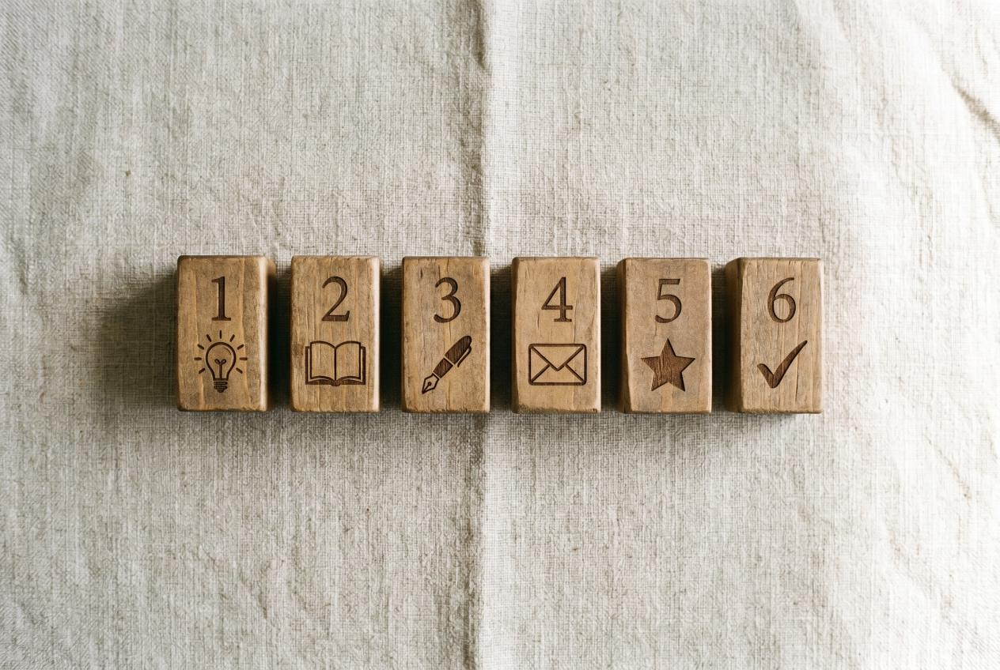

Most indie books fail at launch for one reason: the launch happens in a vacuum. The author hits "publish" on KDP, the book goes live, and… nothing. No pre-orders. No email list buzz. No press scheduled to land that week. Amazon's algorithm sees a flat sales line and concludes: this isn't moving, deprioritize it.
The first 72 hours after launch decide more about your book's trajectory than the next year combined. Books that start hot get pushed into "Customers who bought this also bought…" carousels and onto category bestseller lists. Books that start cold get buried within three days and never recover.
This article is the 60-day pre-launch plan that fixes that. Day by day, what to do, in what order, with what tools. By the end you'll have a calendar that gets your book to launch with a tailwind instead of into a void.
The High-Level Map
| Days from Launch | Phase | What You're Building |
|---|---|---|
| Day -60 to -45 | Foundation | Cover, blurb, ARC list infrastructure, KDP setup |
| Day -45 to -30 | ARC distribution | Get advance copies into reader hands |
| Day -30 to -15 | Press scheduling | Lock in editorial features for launch week |
| Day -15 to -1 | Pre-orders + email | Build buy-pressure for launch day |
| Launch day | Coordinated push | Email, press, social, paid all hit together |
| Day +1 to +14 | Sustain | Convert algorithmic boost into ongoing visibility |
Below: the day-by-day execution.
Phase 1: Foundation (Day -60 to -45)

Day -60: Audit the conversion stack
Before any marketing, your book has to convert when readers land on the Amazon page. The launch plan amplifies whatever conversion rate you have; if it's broken, the plan amplifies broken.
- Cover: Show your cover at thumbnail size (200px wide) to 5 strangers. Ask "what genre is this book?" If they can't answer in 2 seconds, redesign before launching. Use a genre-specialist designer ($300–$800 from Reedsy).
- Blurb: Read your current blurb. If the first sentence is a description ("This is a story about…"), rewrite it as a hook (a promise of an emotional experience). Hire a blurb writer if you can't rewrite it yourself ($150–$400).
- Categories and keywords: Use Kindlepreneur's category guide or Publisher Rocket. Pick three deep niche categories where you can hit top-100 in week one with realistic launch numbers (50–200 sales).
- A+ Content: Plan your A+ content for launch day. Most authors skip this — it lifts conversion 5–15%.
Day -55: Set up infrastructure
- Email tool: ConvertKit, Mailchimp, or Substack. Free tiers are fine to start.
- BookFunnel account ($20/mo) — for ARC delivery and reader-magnet lead gen
- Author website — even a one-page site at Carrd ($19/year). Just needs to be live; 90% of authors over-think this.
- Goodreads author profile — claim your book once it's available for pre-order
Day -50: Open pre-orders on Amazon
KDP lets you open pre-orders 90 days out. Open them now. Do this even if you don't have any audience yet — the URL gives you something to link to in early promotion, and any pre-order accumulates toward launch-week sales velocity.
Set the launch date 60 days from today. Mark your calendar.
Day -45: Build the ARC list
Your ARC (Advance Reader Copy) list is the most important pre-launch asset. These are readers who'll get your book free 4-6 weeks early in exchange for posting reviews on launch week — the reviews that break your book out of the under-10-reviews algorithmic dead zone.
Target list size: 75–100 readers. (Plan for 30–50% conversion to actual review = 25–50 launch-week reviews. We covered the full math in How to Get Reviews for Your Book.)
How to build it:
- Email any existing list with a "be my ARC reader" ask — 30–60% response rate
- Post in your social channels
- Trade ARC slots with other indie authors in your genre (read each other's books, but never review-swap — Amazon TOS violation)
- Add a "Be My ARC Reader" lead magnet to your author site
- Apply to NetGalley co-op listings ($50–$450) for bonus reach
Phase 2: ARC Distribution (Day -45 to -30)
Day -42: Send ARCs
Send the ARC file via BookFunnel (DRM-watermarked, link expires in 14 days). Include in the email:
- Polite expectation: review on Amazon and Goodreads on launch day (or within 7 days)
- Sample review structure (3–5 sentences is enough — most readers freeze at "write a review")
- Reminder that honest is fine — a 3-star review from a real reader builds more credibility than a 5-star from your best friend
Day -35: First reminder
Email ARC readers 7 days after sending: "Hi — checking in! How are you finding [book name]? Just a reminder that I'd love a review on launch day, [DATE]."
Day -30: Second reminder + count check
Final reminder. Count how many readers have confirmed they've read the book. If under 50%, you may need to extend your timeline by 1-2 weeks.
Phase 3: Press Scheduling (Day -30 to -15)
This is where most indie authors skip — and it's the highest-leverage step in the entire plan.
A real magazine feature timed to launch week does five things at once:
- Drives traffic to your Amazon page (Amazon's algorithm rewards traffic + conversion)
- Generates social proof — "as featured in Closer Weekly" beats "self-published" everywhere
- Creates permanent backlinks that improve your author site's domain authority
- Provides quotable copy for ads, email, social, and back covers
- Persists for years as a Google-indexed page surfacing in author-name searches
Day -30: Book the press placements
If you're going the traditional publicist route: you needed to book 3+ months out. Too late now if you haven't.
If you're going the contractual placement route: you can book now and have placements live by launch.
VUGA Spark package ($997) delivers 10 placements in the VUGA Enterprises 104-outlet network within 14 days. VUGA Bestseller ($7,997) adds full editorial articles in Closer Weekly, In Touch Weekly, and Star Magazine within 30 days — perfectly timed to launch week if booked at Day -30.
If you want to test the format before committing, the $97 trial places one editorial article in 7 days. The $97 is credited toward upgrade within 30 days, so the trial is effectively free if you continue.
Day -25: Submit book metadata
Whether you're using a publicist or contractual placement, hand over:
- Final cover image (high-res)
- 200-word synopsis
- Author bio
- Amazon retailer link (pre-order URL works)
- Three quotable themes from the book
Press machines need this packaged cleanly to produce coverage that reads like real journalism.
Day -20: Confirm launch-week timing
Get written confirmation of the dates each placement will go live. The ideal: placements stagger across launch week (Monday, Wednesday, Friday) to keep traffic flowing rather than dumping all on launch day.
Phase 4: Pre-Orders + Email (Day -15 to -1)
Day -15: Email warm-up sequence
Email anyone you've ever been in contact with:
- Existing list (full sequence: 4 emails, weekly, building to launch)
- Personal contacts (friends, family, professional network) — one personal email each
- Anyone who's joined your newsletter in the last 90 days — special "you're part of the inner circle" email
Day -10: Cover reveal post
Post the cover with a story across whichever social platform you're committed to. Don't do "buy my book." Do "here's the cover — [interesting story about how it was made / why this image]." Stories travel; sales pitches don't.
Day -7: Launch teaser
Email everyone, post on social: "[Book name] launches in 7 days. Pre-order at [link]." No more story; just the call.
Day -3: Final push
Email + social: "3 days. Pre-order [link]. ARC readers — your reviews go up on [DATE]."
Day -1: Eve of launch
Email ARC readers a personal note thanking them. Confirm they have the launch date. Many will buy a copy themselves on launch day in addition to the ARC review — that's pure profit and additional algorithmic signal.
Phase 5: Launch Day
The goal of launch day is clustering buys, reviews, and traffic in a tight 24-hour window so Amazon's algorithm sees velocity and pushes your book.
Morning of launch:
- Email ARC readers: "Reviews live now! Here's the link."
- Email full list: "It's launch day. Buy now."
- Post on every active social channel
- Pin the launch post to top of profile
Afternoon of launch:
- Press placements 1 and 2 should go live (if scheduled)
- Push email reminder to anyone who hasn't opened the morning email
- Reply to every comment on social posts
Evening of launch:
- Check Amazon rank — you want category bestseller status by end of day
- Email another reminder if rank is wobbly: "Still time to grab launch-day pricing"
Goal: 75–200 sales on launch day if your audience is small; 500+ if you have a bigger list. The exact number matters less than whether sales are clustered (good algorithmic signal) vs spread thin (weak signal).
Phase 6: Sustain (Day +1 to +14)
Days +1 to +3: Algorithmic boost
Amazon's algorithm is now considering whether your book deserves the also-bought pages and category recommendations. The signals it's reading: ongoing sales, fresh reviews, click-through rate from search.
- ARC readers post any reviews they hadn't yet
- Press placements 3+ go live, driving fresh traffic
- Email sequence: "Day 2 — already a [category] #1 (or whatever you hit)"
Days +7 to +14: Convert traffic into ongoing ranking
The boost lasts 1-2 weeks. Use it:
- Run light Facebook or Amazon ads now (not before — your conversion was unproven)
- Post launch-week stats publicly: "We hit #1 in [category]" — it's marketable
- Reach out to anyone who reviewed and ask if they'd share on social
Day +14 onward: Steady-state
By now your book is either trending up or stalling. If trending up, continue ad spend, plan a "second launch" 60-90 days out around any new press placements. If stalling, audit cover/blurb/categories — the conversion stack might still be the issue.
What Most Plans Get Wrong
Generic "book launch strategy" articles tell you to: build a platform, get on social media, network with authors, run a giveaway. None of those are wrong. Most are too slow or too vague to execute against a 60-day timeline.
The plan above prioritizes the two highest-leverage actions that almost no indie author actually does:
- A real ARC list of 75+ readers (not just family) — produces 25–50 launch-week reviews
- Real press timed to launch week — produces 200–2,000 launch-week visitors and permanent SEO assets
Books that do these two things consistently outperform books that don't, regardless of any other factor. Books that skip them rarely break out of single-digit reviews and three-figure total sales.
The Stack That Actually Works
If you're starting today with no list, no press, and a manuscript ready:
- Day 0 (today): Open pre-orders. Sign up for BookFunnel. Build ARC list ask.
- Day 14: Send first ARCs.
- Day 30: Book a VUGA Bestseller package ($7,997) — three guaranteed magazine features land in launch week.
- Day 45: ARC reminders going out.
- Day 50: Email warm-up sequence begins.
- Day 60: Launch with reviews flowing, press articles publishing, email list buying.
This produces an indie book launch that starts with momentum instead of into a void. Most don't.
Browse VUGA author packages — Trial $97, Spark $997, Bestseller $7,997, Authority $14,997. Every placement guaranteed by contract. Money-back if we don't deliver.
Sources for this article:
- BookBaby, "Book Launch Plan: A 60-Day Strategy"
- Reedsy, "How to Launch a Book"
- Kindlepreneur, "The Ultimate Book Launch Plan"
- IngramSpark, "Book Launch Marketing Plan"
- Jane Friedman, "Book Launch Plan and Marketing"
Image generation prompts (Gemini Nano Banana Pro)
Hero image (1600×900, JPG):
An editorial overhead photograph of a wall calendar with a 60-day countdown circled in red marker, a book cover taped beside it, several sticky notes with handwritten task items, a fountain pen, and a coffee cup in the corner. Soft afternoon studio light. Color palette: cream calendar paper, deep red marker, black ink, gold pen accent. Editorial planning photography. Ultra-realistic. --ar 16:9 --style raw
Inline image 1 — phase timeline (1200×800):
A flat-lay photograph of six small wooden blocks arranged in a row, each engraved with phase numbers (1 through 6) and a tiny graphic icon (a lightbulb, a book, a pen, an envelope, a star, a checkmark). Soft natural light, white textured background. Editorial product photography. --ar 3:2
Inline image 2 — launch-day moment (1600×900):
A photograph of a desk at dawn with multiple devices showing a book launch in real-time: phone with a Goodreads notification, laptop with Amazon page open showing #1 in category, paper notebook with handwritten "LAUNCH DAY" and a checkmark. Coffee cup, golden morning light. Editorial behind-the-scenes photography. --ar 16:9 --style raw